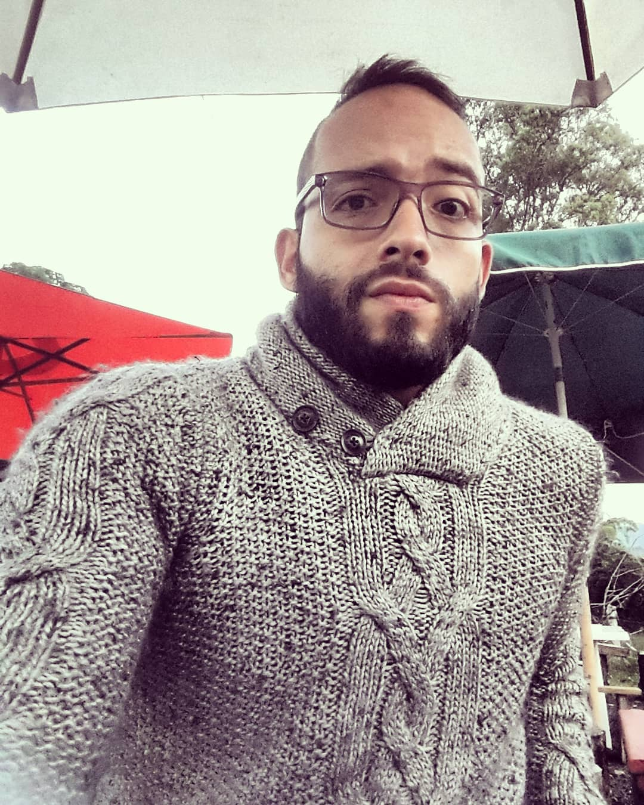

Education
- Specialization on Data Networks, Master Degree
- Technological University of Pereira
- 2021 - Current
- Computer Systems Engineer
- Technological University of Pereira
- 2019 Degree
- Ilex - UTP English Courses
- 2015

About me
Around 3 years of experience in web development, mostly backend in python, and Node JS but also Frontend in Javascript, Html and CSS. Lately React JS has become my main technology.
My last formal job was as a systems manager in charge of the support and development of a GPS monitoring platform developed in bash and python languages.
I am passionate about technology with more than 15 years of experience in technical support and digital transformation processes
Professional Experience
- Freelance Developer
- Software developer and proyect manager for web applications based on PHP and Python
- 06/2020 - Current
- React developer
- Support on building a platform to evaluate employer's companies performance
- 04/2021 - 10/2021
- Head of support and development
- System manager systems department of a company in Pereira and main developer of their GPS Satellite monitoring platform
- 10/2019-05/2020
- Backend Developer
- Developer for a PHP web application with images visualization for Android and TV box.
- 02/2019 - 05/2019
Certificates and courses
- SCRUM Fundamentals Certificate
- Aug 2021
- Credential ID: 863507
- Scrum Study
- REDSI investigation course
- 16 sep 2020 - 9 Dec 2020
- 47 Hours
- UTP Pereira
Research Articles
- Analysis and design of an interface for arduino-based PLC connection with allen bradley PLC via ethernet.
- 2019, Scientia et Technica journal article
Awards
- 1ST PLACE BOGOWEEK STARTUP WEEKEND
- 2021, Proyect Voyabici, Bogota
- 1ST PLACE DOSQUEBRADAS INNOVATION AND ENTREPRENEURSHIP WEEK
- 2020, City challenge winner, Dosquebradas
- ALIBABA GET CHALLENGE 2020 NATIONAL FINALIST
- 2020, Frutero
Others
- Over 12 online courses taught
- Over 5 workshops taught at UTP and government entities
- Speaker at multiple enterpreneurship online events